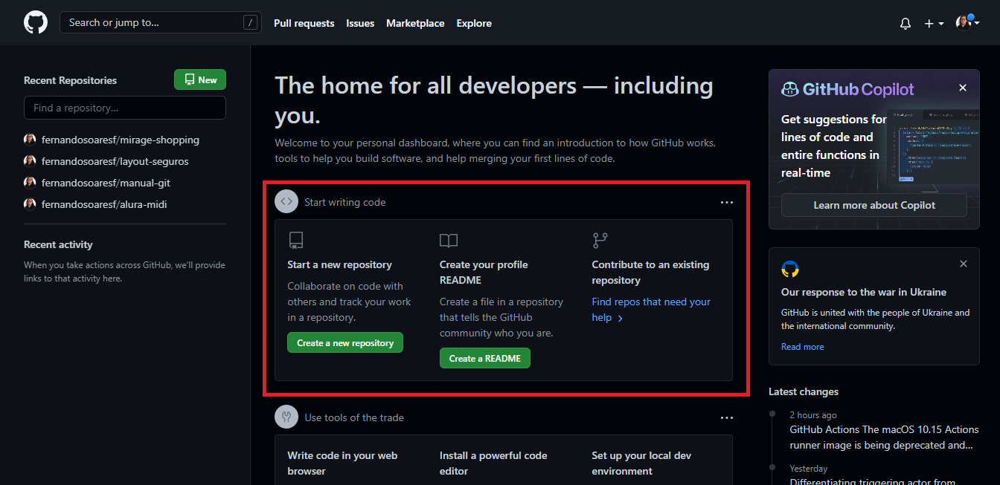
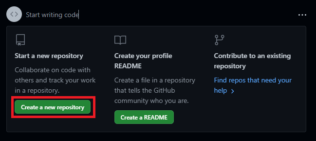
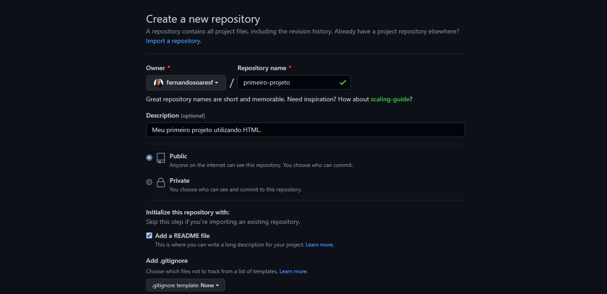
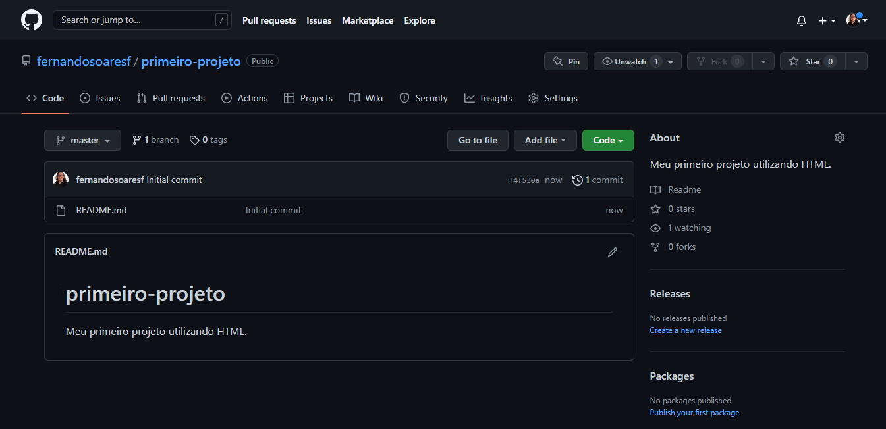

COMO UTILIZAR O GIT E O GITHUB
Todo desenvolvedor em início de carreira já ouviu falar na palavra Git. O que seria Git e GitHub? Aqui responderei suas dúvidas e ensinarei o passo a passo de como instalar e utilizar o Git e o GitHub.
O que é Git?
O Git foi criado pelo engenheiro de software Linus Torvalds, que também desenvolveu o núcleo Linux. o GIT é um Sistema de Controle de Versões Distribuído, ou seja, permite que você desenvolvedor possa criar, subir, fazer updates, voltar a uma versão anterior e apagar,se quiser, versões do seu código. O sistema do Git facilita todo o processo pra você.
O que é GitHub?
O GitHub é usado principalmente para armazenar repositórios, que são as "localizações" dos arquivos de um determinado projeto. Os usuários podem criar projetos com base em outros já existentes e editá-los à sua maneira — é assim, por exemplo, que múltiplos desenvolvedores se ajudam em um mesmo projeto. Desse modo, depois de editar os códigos, o programador em questão pode lançar o projeto revisado novamente na rede para que os demais também tenham a oportunidade de otimizá-lo. Em outras palavras, GitHub é uma plataforma totalmente online onde você pode criar repositórios e hospedar neles seus projetos, colaborar com softwares open source, seguir outros(as) programadores(as) e interagir com códigos de terceiros. O GitHub armazena todos estes dados em uma nuvem e você pode acessá-los de onde estiver: basta logar-se no site em qualquer navegador.
Dicionário do Git
-
Repositório
Os repositórios são os ambientes criados para armazenar seus códigos.
-
Branch
É o nome dado a uma versão (ramificação) do projeto.
-
Merge
Para unir as modificações feitas em um branch ao código original, utilizamos o comando merge.
-
Fork
Quando um profissional desenvolvedor precisa começar a trabalhar em um projeto, seu primeiro passo é copiar este repositório para a sua máquina. Este processo é realizado pelo comando fork.
Comandos do Git
-
Init
Dá origem a um repositório novo, local ou remoto, ou reinicializa um repositório já existente.
-
Clone
Clona o código de um repositório para sua manipulação em outro ambiente.
-
Commit
Move os arquivos da state area para um repositório local.
-
Add
Adiciona um arquivo alterado a uma staging area, ou seja, o prepara para ser vinculado a um commit.
-
Push
Envia arquivos de um repositório local para um repositório remoto. No GitHub, por exemplo.
-
Pull
Ao contrário do push, este comando traz um arquivo do repositório remoto para o repositório local.
-
Merge
Serve para unir arquivos alterados ao arquivo original de um projeto. Em outras palavras, é ele quem une os branchs as commits.
-
Log
Permite a visualização do histórico de commits de um arquivo ou usuário, ou o acesso de uma versão específica.
Na prática
Dado os conceitos e comandos agora é a hora ensinar a como funciona tudo na prática. Primeiramente é necessário baixar e instalar o Git na máquina.
Clique no botão abaixo para ser redirecionado para a página de download do Git e veja como instalá-lo de acordo com o seu sistema operacional.
"Agora que baixei o Git, é só dar git init no editor de códigos para subir tudo no GitHub, certo?" Errado! Você deve criar uma conta no GitHub para fazer os seus repositórios. Para isso, você deve ir no GitHub, clicar em "Sign Up" e seguir as instruções para concluir sua conta.
Criando um repositório
Depois de ter criado uma conta no GitHub, você pode criar respositórios para salvar seus projetos. Para tal, localize o botão "create a new repository" na tela inicial.
   